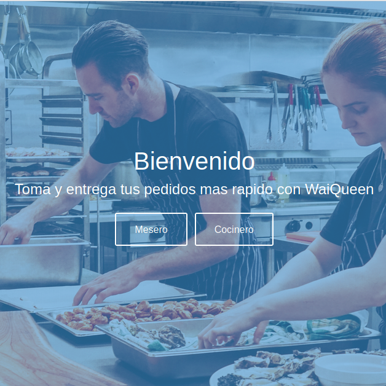

Cipher
Un proyecto donde podemos encriptar mensajes inspirado en el famoso codigo cesar


data-lovers
Es un proyecto donde podemos filtrar los personajes por especies de la famosa serie rick and morty

Burger-Queen
Es un proyecto en el cual esta diseñado para restaurantes para poder agilizar la toma de pedidos